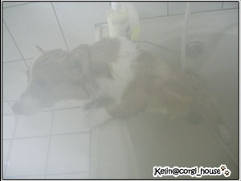
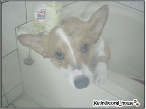
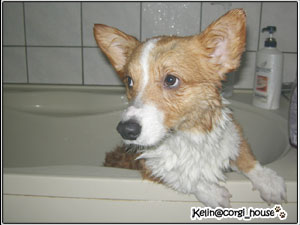
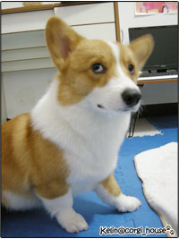

那天用神奇梳幫摩卡除廢毛後~想說順便來幫他洗個澡好了!
而且前陣子買的小麥草潤絲精(左)都還沒用過!  另一瓶GO POWERFUL是液態維骨力(右)
另一瓶GO POWERFUL是液態維骨力(右)
 奶油小生摩卡卡的的獨家私密醜態Shower畫面要曝光嘍!!!
奶油小生摩卡卡的的獨家私密醜態Shower畫面要曝光嘍!!!
呃....一團迷霧...(因為天氣太冷窗戶只開了一點點通風!!哈)
摩卡：麻麻你在那裡啊?

麻麻：我在這裡啦!! 正在對你老爸家暴中...
(因為幫忙拍照的猛哥在那邊拍邊說摩卡你好醜歐之類的話!!!  )
)

你說說看啊!!那隻狗子..碰到水沒變成一副老人臉!! 
我想卡卡臉還算喔科啦!! 大概是4~50的中年男子而已啦!! 

今天第一次使用了潤絲精~結果忘了它的濃度是16:1~ 一下子擠了個太多
害我沖好久~怕殘留在身上讓皮膚過敏~
使用方法很簡單 全身淋溼，使用手指腹輕輕按摩，並留置1~2分鐘,接著沖洗乾淨
沖乾淨的毛摸起比較不會澀澀乾乾的感覺~果然有潤絲的效果!!
而且味道很好聞~我很喜歡它淡淡的小麥草味
有點像牛奶糖!? (不好意思歐!鼻子不靈..什嘛我都覺得像牛奶味..哈哈)

洗完吹乾的摩卡卡~有一種亮晶晶的fu呀!!
毛好白~好順...膨膨滴~~梳毛的時候都不會打結了!!
不過吹乾吹很久~洗完澡的獎品(牛筋圈)又讓他等很久..
有人"賣頌"了!!  在瞪我....
在瞪我....

ㄟㄟㄟ 大佬!! 那牛筋圈是我額外給你的獎賞耶~~很跩歐你!!